Figured bass
Overview
Figured bass is a shorthand notation for representing chords on a continuo instrument (such as a keyboard), using a series of numbers and other symbols written underneath the notes of the bass line.
Adding figured bass to your score
Entering a figure
- Select the note to which the figured bass applies;
- Press the Figured Bass shortcut. The default is
Ctrl+G(Mac:Cmd+G); this can be changed in Preferences: Shortcuts if desired; - Enter the text in the "edit box" which appears.
Text format
For the relevant substitutions and shape combinations to take effect and for proper alignment, the figured bass mechanism expects input texts to follow some rules (which are in any case, the rules for a syntactical figured bass indication):
- There can be only one accidental (before or after), or only one combining suffix per figure;
- There cannot be both an accidental and a combining suffix;
- There can be an accidental without a digit (altered third), but not a combining suffix without a digit.
- Any other character not listed above is not expected.
If a text entered does not follow these rules, it will not be processed: it will be stored and displayed as it is, without any layout.
Digits
Digits are entered directly. Groups of several digits stacked one above the other are also entered directly in a single text, stacking them with Enter:
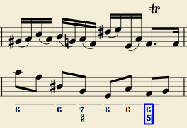
Accidentals
Accidentals can be entered using regular keys:
| To enter: | type: |
|---|---|
| double flat | bb |
| flat | b |
| natural | h |
| sharp | # |
| double sharp | ## |
These characters will automatically turn into the proper signs when you leave the editor. Accidentals can be entered before, or after a digit (and of course, in place of a digit, for altered thirds), according to the required style; both styles are properly aligned, with the accidental 'hanging' at the left, or the right.
Combined shapes
Slashed digits or digits with a cross can be entered by adding \, / or + after the digit (combining suffixes); the proper combined shape will be substituted when leaving the editor:
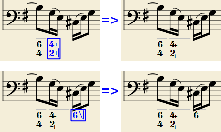
The built-in font can manage combination equivalence, favoring the more common substitution:
1+, 2+, 3+, 4+ result in
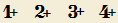
(or

)
and 5\, 6\, 7\, 8\, 9\ result in
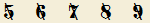
(or
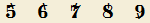
)
Please remember that / can only by combined with 5; any other 'slashed' figure is rendered with a question mark.
+ can also be used before a digit; in this case it is not combined, but it is properly aligned ('+' hanging at the left side).
Parentheses
Open and closed parentheses, both round: '(', ')' and square: '[', ']', can be inserted before and after accidentals, before and after a digit, before and after a continuation line; added parentheses will not disturb the proper alignment of the main character.
Notes: (1) The editor does not check that parentheses, open and closed, round or square, are properly balanced. (2) Several parentheses in a row are non-syntactical and prevent proper recognition of the entered text. (3) A parenthesis between a digit and a combining suffix ('+', '\', '/') is accepted, but prevents shape combination.
Editing existing figured basses
To edit a figured bass indication already entered use one of the following options:
- Select it, or the note it belongs to and press the same Figured Bass shortcut used to create a new one.
- Double-click it.
The usual text editor box will open with the text converted back to plain characters ('b', '#' and 'h' for accidentals, separate combining suffixes, underscores, etc.) for simpler editing.
Once done, press Space to move to a next note, or click outside the editor box to exit it, as for newly created figured basses.
Navigating by note, beat, or measure
The duration of a Figured Bass indication often lasts until the next bass note or the end of a bar. Such Figured Bass can be entered consecutively using the keyboard. (To move to a point in between, or to extend a figured bass group for a longer duration, see Duration).
- Press
Spaceto move to the next note ready for another figured bass indication (or click outside the editor box to exit it). The editor advances to the next note, or to the rest of the staff to which figured bass is being added.\
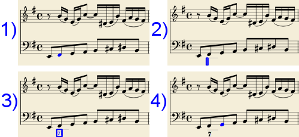
Shift+Spacemoves the editing box to the previous staff note or rest.Tabadvances the editing box to the beginning of the next measure.Shift+Tabmoves the editing box to the beginning of the previous measure.
Duration
Each figured bass group has a duration, which is indicated by a light gray line above it (of course, this line is for information only and it is not printed or exported to PDF).
Initially, a group has the same duration of the note to which it is attached. A different duration may be required to fit several groups under a single note or to extend a group to span several notes.
To achieve this, each key combination in the table below can be used to (1) advance the editing box by the indicated duration, and (2) set the duration of the previous group up to the new editing box position.
Pressing several of them in sequence without entering any figured bass text repeatedly extends the previous group.
| Type: | to get: |
|---|---|
Ctrl+1 |
1/64 |
Ctrl+2 |
1/32 |
Ctrl+3 |
1/16 |
Ctrl+4 |
1/8 (quaver) |
Ctrl+5 |
1/4 (crochet) |
Ctrl+6 |
half note (minim) |
Ctrl+7 |
whole note (semibreve) |
Ctrl+8 |
2 whole notes (breve) |
(The digits are the same as are used to set the note durations)
Setting the exact figured bass group duration is only mandatory in two cases:
- When several groups are fit under a single staff note (there is no other way).
- When continuation lines are used, as line length depends on the group duration.
However, it is a good practice to always set the duration to the intended value for the purposes of plugins and MusicXML.
Entering continuation lines
Continuation lines are input by adding an '_' (underscore) at the end of the line, then pressing the keyboard combination for the required duration of the continuation line to exit the editing box. Each digit of a group can have its own continuation line. To write the continuation lines in the following example:
- Select the note to which the figured bass applies.
- Press the Figured Bass shortcut
Ctrl+G(Mac:Cmd+G) to enter the editing box. - Type
6Enter. - Type
4Enter. - Type
Ctrl+6to edit the editing box and advance the cursor.
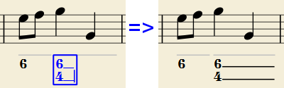
Continuation lines are drawn for the whole duration of the figured bass group.
'Extended' continuation lines
Occasionally, a continuation line has to connect with the continuation line of a following group, when a chord degree has to be kept across two groups. Examples (both from J. Boismortier, Pièces de viole, op. 31, Paris 1730):
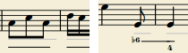
In the# first case, each group has its own continuation line; in the second, the continuation line of the first group is carried 'into' the second.
This can be obtained by entering several (two or more) underscores "__" at the end of the text line of the first group.
Figured bass properties
The text formatting of figured bass symbols is handled automatically by the program, based on style settings (see below). Only General and Appearance properties can be adjusted from the Properties panel..
Figured bass style
Properties of all figured bass symbols in the score can be set from Format→Style…→Figured Bass.
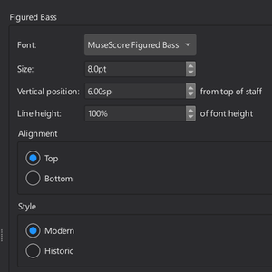
- Font: This is the preset "MuseScore Figured Bass," which is specially designed to realise figured bass notation.
- Size: Select a font-size in points.
- Vertical Position: The distance (in spaces) from the top of the staff to the top margin of the figured bass text. Negative values go up (figured bass above the staff) and positive values go down (figured bass below the staff: a value greater than 4 is needed to step over the staff itself).
- Line Height: The distance between the base line of each figured bass line, as a percentage of font size.
The following picture visualizes each numeric parameter:
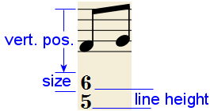
- Alignment: Select the vertical alignment: with Top, the top line of each group is aligned with the main vertical position and the group 'hangs' from it (this is normally used with figured bass notation and is the default); with Bottom, the bottom line is aligned with the main vertical position and the group 'sits' on it (this is sometimes used in some kinds of harmonic analysis notations):
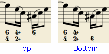
- Style: Choose between "Modern" or "Historic." The difference between the two styles is shown below:
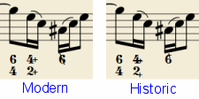
Figured bass keyboard shortcuts
| Type: | to get: |
|---|---|
Ctrl+G |
Adds a new figured bass group to the selected note. |
Space |
Advances the editing box to the next note. |
Shift+Space |
Moves the editing box to the previous note. |
Tab |
Advances the editing box to the next measure. |
Shift+Tab |
Moves the editing box to the previous measure. |
Ctrl+1 |
Advances the editing box by 1/64, setting the duration of the previous group. |
Ctrl+2 |
Advances the editing box by 1/32, setting the duration of the previous group. |
Ctrl+3 |
Advances the editing box by 1/16, setting the duration of the previous group. |
Ctrl+4 |
Advances the editing box by 1/8 (quaver), setting the duration of the previous group. |
Ctrl+5 |
Advances the editing box by 1/4 (crochet), setting the duration of the previous group. |
Ctrl+6 |
Advances the editing box by a half note (minim), setting the duration of the previous group. |
Ctrl+7 |
Advances the editing box by a whole note (semibreve), setting the duration of the previous group. |
Ctrl+8 |
Advances the editing box by two whole notes (breve), setting the duration of the previous group. |
Ctrl+Space |
Enters an actual space; useful when figure appears "on the second line" (e.g., 5 4 -> 3). |
B B |
Enters a double flat. |
B |
Enters a flat. |
H |
Enters a natural. |
# |
Enters a sharp. |
# # |
Enters a double sharp. |
_ |
Enters a continuation line. |
_ _ |
Enters an extended continuation line. |
Note: For Mac commands, Ctrl is replaced with Cmd.